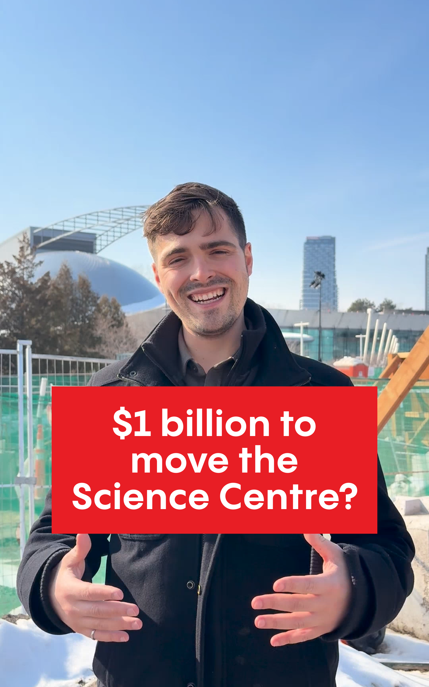

Over the past two weeks the Ford government has floated two enormous vanity projects: roughly $1 billion to relocate the Ontario Science Centre to Ontario Place, and a multi-billion-dollar proposal for a new convention centre on a new infill “Island” centre.
Taken together, they highlight a deeper problem in how Ontario now approaches major public spending. Projects worth billions of dollars should not emerge from press conferences. They should come out of a transparent process that evaluates best practices, weighs economic impact, and considers opportunity cost. Instead, what we increasingly see is the opposite: a large project is announced first, and the justification follows later.
Take the convention centre proposal. Convention centres succeed when they are located near major transportation hubs, large hotel districts, and cultural amenities like restaurants. That is precisely why Toronto’s existing convention centre sits where it does today. The proposed location does not follow that logic at all. If the goal were genuinely to expand convention capacity, there are far more obvious places to do it (assuming it can’t be done at the current location). Exhibition Place would at least make some sense. East Harbour, where a major new transit and commercial hub is being built, would make even more sense. Instead, the proposal appears to drop billions of dollars into a location that meets none of this obvious criteria.
The economic case is also thin, but I am willing to be convinced it’s worth it. Tourism matters, but it is not a major driver of productivity growth. Spending billions of public dollars here means diverting those resources away from other investments that could raise Ontario’s economic capacity.
The same logic applies to the Ontario Science Centre decision. When our campaign released a recent video about this issue, the goal was not simply to criticize the government. It was to illustrate the opportunity cost of spending at this scale. For roughly the same amount of money, Ontario could finance a range of cultural and public works projects across the province that communities have been discussing for years.

The point is not that these exact projects must happen. It is that when billions of dollars are at stake, the province should be comparing options and asking a simple question: what creates the most value for Ontarians?
Right now, that discipline appears to be missing. Large sums of public money are being committed in ways that feel arbitrary and increasingly concentrated in Toronto.
At some point, the lack of restraint begins to matter. It is hard to tell students protesting cuts to OSAP that there simply is not enough money to support their education while billions of dollars are casually proposed for projects like these. The same goes for our health and education systems, where hospitals are overcrowded, classrooms are stretched, and frontline institutions are constantly told resources are limited. Ontario is already running large deficits, yet the province continues to float new multi-billion-dollar spending ideas with little explanation of how they fit into a broader strategy. Yes, these announcements may not be quite as extravagant as the proposed $100 billion 401 tunnel, but the pattern is the same. Public money is being treated as if it were limitless. When governments are spending billions of taxpayer dollars, restraint and discipline should not be optional.
Freedom Without Fear For Jewish Canadians
I was appalled by the shootings targeting Shaarei Shomayim in Toronto and Beth Avraham Yoseph of Toronto (the BAYT) in Thornhill. Violence against places of worship is unacceptable, and for many Jewish families these attacks are frightening reminders that rising antisemitism has become a fact of life. That’s a shame.
The next Premier of Ontario cannot solve the world’s geopolitical conflicts. The emotions surrounding Israel and Palestine, or Israel and Iran, are deeply felt by many Ontarians, and those debates will continue in a free society.
But the role of government is simpler and more fundamental. Liberalism is not merely a personality trait like tolerance or moderation. It is an architecture that allows people who disagree to live together without coercion and without fear. Its legitimacy rests on a basic promise: that individuals can practice their faith, gather in their communities, and live their lives safely.
That promise must apply to denominated Jewish spaces as much as anywhere else.
Which means acting with seriousness. Security funding should be expanded and delivered quickly. Police presence around places of worship should be consistent during periods of heightened risk as there is now. And antisemitic violence must be investigated and prosecuted as the serious public safety threat that it is.
Corporate Welfare and the Cost of Complexity
This week our campaign hosted economist Joseph Steinberg to discuss corporate subsidies and industrial policy. One of the themes that stood out is how misleading the conversation about competitiveness can be.
Canada is often described as having an attractive corporate tax environment. But once you look more closely, the picture becomes more complicated. As the chart below shows, the gap between marginal and average effective tax rates reflects a system layered with subsidies, credits, and special arrangements that affect firms very differently.
The scale of this system is larger than most people realize. Ontario spends billions of dollars ($10B+) each year on direct corporate subsidies, and even more once you account for indirect advantages such as preferential financing or regulatory capture.
This is a difficult problem, but it is also a real drag on the economy. For example, eliminating direct subsidies could allow Ontario to cut corporate taxes by rover 30 percent for all businesses. That kind of broad, rules-based approach would likely attract far more investment than today’s complex system of selective deals. I am not suggesting I would abolish every subsidy overnight, but these issues are a huge drain on Ontario over the long run. It will take political bravery to conduct real regulatory and tax simplification.